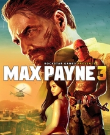

|  | |
| Tiempo de juego | No Jugado |
| Última actividad | Nunca |
| Añadido | 11/6/2024 14:41:31 |
| Modificado | 2/4/2025 23:51:29 |
| Estado de finalización | No Jugado |
| Librería | Playnite |
| Fuente | 1 TB EXT |
| Plataforma | PC (Windows) |
| Fecha de lanzamiento | 5/15/2012 |
| Puntuación de la Comunidad | |
| Puntuación de la Crítica | 87 |
| Puntuación de usuario | |
| Género | Third-person shooter |
| Desarrollador | Rockstar Studios |
| Editor | Rockstar Games |
| Característica | Multiplayer Single-player |
| Enlaces | Wikipedia Official website |
| Tag | [Game Engine] RAGE [People] artist: Joshua Bass [People] artist: Paul MacPherson [People] artist: Rob Nelson [People] composer: Health [People] designer: Sergei Kuprejanov [People] producer: Steve Martin [People] programmer: Hugues St. Pierre [People] programmer: Kevin Hoare [People] programmer: Lewis Gordon [People] writer: Dan Houser [People] writer: Michael Unsworth [People] writer: Rupert Humphries |
Max Payne 3 is a 2012 third-person shooter game developed and published by Rockstar Games. The game was first released for PlayStation 3 and Xbox 360 on May 15, 2012; a Windows port was released on May 29, followed by an OS X port on June 20, 2013. It is the sequel to Max Payne 2: The Fall of Max Payne and is the third entry in the Max Payne series. It is also backwards compatible on Xbox One and Xbox Series X/S.
Max Payne 3 is played from a third-person perspective. Throughout the single-player mode, players control Max Payne, a former NYPD detective. Nine years after the events of the second game, Max finds work as a private security contractor in São Paulo, Brazil, but becomes entangled in a quest filled with death and betrayal. An online multiplayer mode is included with the game, allowing up to 16 players to engage in both cooperative and competitive gameplay in re-creations of multiple single-player settings.
As part of their research for the Max Payne 3's setting, the developers conducted field research around São Paulo throughout development and captured footage for the design team. Development duties were shared between many of Rockstar's studios worldwide.
Max Payne 3 received positive reviews from critics, who praised its gameplay, narrative, and action themes, though some criticism was aimed at the change in style from its predecessors, its linear design, and depiction of São Paulo. The game had shipped 4 million units by May 2013. It was nominated for multiple year-end accolades from several gaming publications, winning a variety of them.
Max Payne 3 is a third-person shooter in which the player assumes the role of its titular character, Max Payne. A new feature to the series is the cover system, which allows players to gain a tactical advantage, and avoid taking damage from enemies. To progress through the linear story, players take on enemies throughout levels. The game features interactive cutscenes which transition seamlessly into continuing gameplay; there are no loading screens across gameplay and cutscenes.
In combat, auto-aim and a cover system can be used as assistance against enemies. Should players take damage, painkillers can be used to regenerate health. Players use melee attacks, firearms and explosives to fight enemies. In action sequences, bullet time can be used; using this feature, it is possible to see every bullet strike an enemy in detail. The game also introduces a "Last Stand" mechanic, granting players a grace period when health is fully depleted that allows the player to kill the enemy that last wounded them in order to remain alive, so long as the player has at least one recovery item. When this feature is utilized, it does deplete all of the player's remaining "bullet time". Also new to the series is that after using the shoot-dodge mechanic, which enables players to dodge enemies by diving, players may shoot at any angle while remaining grounded.
Unlike the previous games in the series, the player character can only hold three weapons at a time. There are two slots for handguns and one for a two-handed weapon. If the player chooses to equip both handguns at the same time, the two-handed weapon must be dropped. Otherwise, the player character holds the two-handed weapon under their arm.
The online multiplayer mode features maps and modes that dynamically change within a match. Up to 16 players engage in cooperative or competitive gameplay in re-creations of multiple single-player settings. Players may band together in organized player teams, called crews, to complete tasks together. Players can create their own crews, via the Rockstar Games Social Club, and join up to five players together in total. Together, crews can win multiplayer matches to earn experience points and climb online leaderboards. The online multiplayer mode and Social Club support for the console versions of the game were discontinued in September 2021.
According to Rockstar's president Sam Houser, it was their intention to start a new chapter of Max Payne's life with the game: "This is Max as we've never seen him before, a few years older, more world-weary and cynical than ever." The press release states that since the last game, Max has left New York City behind and "drifted from bad to worse." The press release goes on to say Max has been double-crossed in this new city and is searching for both the truth and a way out. The game is set in São Paulo, Brazil, several years after the events of the ending of the second game. Max Payne now works in executive protection for the wealthy Rodrigo Branco and his family in the hopes of escaping the memories of his troubled past. When a street gang kidnaps Rodrigo's wife, Fabiana, Max is pulled into a conspiracy of shadowy, warring factions threading every aspect of São Paulo society in a deadly web that threatens to engulf everyone and everything around him.
Nine years after the events of the second game, Max Payne (James McCaffrey) has retired from the NYPD and spends his days nursing his alcoholism and addiction to painkillers. After an incident in a bar in Hoboken, New Jersey, forces him to leave New York, Max accepts an offer from Raul Passos (Julian Dean), whom he met during the incident, to become a private security contractor in South America. Max finds himself working for the Branco family, consisting of Rodrigo Branco (Frank Rodriguez), a wealthy real-estate mogul; Fabiana Branco (Benedita Pereira), Rodrigo's trophy wife; Giovanna (Shirley Rumierk), Fabiana's sister; Victor Branco (Robert Montano), a local politician; and Marcelo Branco (Dillon Porter), a hard-partying socialite. Operating in São Paulo a few months later, Max thwarts a kidnapping attempt on the Brancos by the Comando Sombra, a local street gang, during a private party. A week later, the gang manage to kidnap Fabiana at a nightclub while Max is overseeing her protection alongside Marcelo and Giovanna.
Instructed to pay $3 million for her release, Rodrigo allows Max and Passos to handle the exchange at a local football stadium. However, the meeting between them and the Comando Sombra is ambushed by the Crachá Preto, an outlaw vigilante militia, who steal the money. Although the pair learn where the Comando Sombra took Fabiana, their attempt to rescue her is thwarted by the gang's leader Serrano (Babs Olusanmokun). Meeting with the Branco brothers at Rodrigo's office, Victor recommends the police handle Fabiana's recovery. Shortly after Victor, Marcelo, and Passos leave, the Crachá Preto attack the office to kill Max. While he survives, Rodrigo is assassinated during the chaos. Blaming himself for the situation, Max swears off alcohol, shaves his head, and proceeds to seek out Serrano and Fabiana within the Nova Esperança favela, based on information from a dying Crachá Preto operative.
During his search of the favela, Max runs into Detective Wilson Da Silva (Stephen Girasuolo), who offers assistance in exchange for help in investigating the Crachá Preto, who he suspects have ties to Victor and the Unidade de Forças Especiais (UFE), São Paulo's police tactical unit. Max eventually reaches Serrano's hideout, only to witness the Comando Sombra murder Fabiana. As the UFE raid the favela, Max finds himself forced to rescue Marcelo and Giovanna, who were captured by the Comando Sombra while attempting to save Fabiana. During his search for the pair, he finds the UFE to be corrupt upon witnessing them selling prisoners to the Crachá Preto. While Max eventually finds and rescues Giovanna, Marcelo is executed by the Crachá Preto. After a shootout at a bus station while trying to hide from the Crachá Preto, Passos arrives to help, but flees with Giovanna, who is pregnant with his child. Angered at being abandoned, Max is picked up by Da Silva, and learns that Passos was on Victor's payroll.
Questioned about an attack on Marcelo's private yacht in the Panama Canal a few weeks earlier, Max recalls that Marcelo and Passos tried to drive away with cargo that the attackers sought to steal. Da Silva reveals the cargo was money that Victor needed laundered in Panama, and that Max was recruited to be the fall guy for his illegal activities. At Da Silva's request, Max investigates a rundown hotel used by the Crachá Preto. His investigation reveals that the building is the base for a black market organ theft ring, which the UFE supplies with their prisoners. After releasing a number of detainees, including Serrano, Max plants explosives around the hotel to destroy it. The Crachá Preto's leader, Álvaro Neves (Gil Cardoso), tries to stop him, but Passos kills him and escapes with Max moments before the hotel is demolished, where he reveals that he was unaware of the organ trading and had been pressured into helping by Victor. Although angered at Passos' involvement in Victor's affairs, Max forgives him for coming back for him, and allows him to leave the city with Giovanna.
To expose the involvement of Victor and the UFE with the organ thefts, Da Silva persuades Max to get arrested at the UFE's headquarters in order to search it for incriminating evidence while De Silva releases the cells to start a riot as a distraction. His search culminates in the discovery that Victor arranged for Rodrigo's murder to acquire his wealth, and that the sales of stolen organs were to fund his campaign in the upcoming mayoral elections. After a confrontation with Victor and the UFE's leader, Armando Becker (Ubirajara de Castro), leads to them escaping, Max pursues them to the airport, leading to an intense fight with the UFE. Max eventually catches up to both, mortally maiming Becker in a shootout, before destroying Victor's private jet with Da Silva's help. Although Max opts to spare Victor's life and leave him to be arrested by Da Silva, he breaks his leg to make him suffer. A week later in Bahia, Max overhears news in a bar that the UFE was disbanded, and Victor was found dead in prison. Choosing to move on with his life, Max takes a walk along the beach as the sun sets.
The game was originally scheduled for release in late 2009. However, it was pushed back to 2010 alongside several other Take-Two Interactive franchises in order to "benefit from having more development time". In June 2010, the game was again pushed back to 2011. On December 21, it was not present on the 2011-2012 calendar year, and was pushed back again. The game was still in development and not canceled or indefinitely halted when Rockstar released two new screenshots for the game. On September 8, 2011, Rockstar announced a March 2012 release date for the game, with a debut trailer released on September 14. In January 2012, Take-Two delayed the game by two months from its original March release date to May 2012. The publisher said the decision was made in order to "ensure that Max Payne 3 delivers the highest quality."
The debut trailer was released on September 14, 2011. The writer for the series, Sam Lake, commented that the game would "maintain its dark and gritty origins" and that fans of the series would be "in for a surprise". Remedy Entertainment head of franchise development, Oskari Häkkinen, praised Rockstar Games' take on the series, stating that it looked "brilliant". Remedy served as consultants for Rockstar when the game reached its final stage of development.
Rockstar Games conducted research to ensure that the vibe, culture, police, weapons and every element of São Paulo was as authentic as possible. The research team visited São Paulo several times and went to lengths researching the local gangs, police and special forces, including each group's choice of equipment and firearms. The fictional UFE resembles Brazilian special police units such as BOPE; the company suggests that fans of the game watch the 2007 Brazilian film Elite Squad (Brazilian Portuguese: Tropa de Elite), especially the "intense sequences of BOPE soldiers carefully raiding favela warzones and caught in deadly shootouts versus heavily-armed drug dealers and lookouts who wield assault rifles and Uzis as part of daily life." Some retailers bundled the game with the film and its sequel.
In a November 2011 interview, Dan Houser of Rockstar Games said that despite what the general public might think, Rockstar likes to "spend a bit of time" at the end of projects before deciding what to do next. "Basically we have been meaning to start [Max Payne 3] for a while, but we have limited bandwidth and limited studios, and more games to make than we've started. So suddenly it was a good slot," Houser said, explaining why it took eight years to follow up Max Payne 2. "Also, contrary to a lot of people, we like to take a little bit of time at the end of a game before starting a sequel, so we can wait for the excitement or disappointment and everything else of the experience to shake down and really see what we should do in the next game."
The game runs on the proprietary Rockstar Advanced Game Engine (RAGE), along with Euphoria software. In February 2012, it was confirmed that the PC version of the game features DirectX 11 and stereoscopic 3D rendering. The PC version of Max Payne 3 is shipped on four DVDs and the Xbox 360 version on two discs due to the disc size limit; however, the PlayStation 3 version ships on one Blu-ray Disc.
Max Payne 3 was Rockstar's "biggest and boldest marketing effort thus far". Highlights of the campaign included prominent TV spots during the 2012 UEFA Champions League Final and other mainstream programming, as well as outdoor campaigns. Rockstar Games ran a competition where its Twitter followers who tweet using the #MaxPayne3 hashtag through January 13, 2012, could see their likeness featured in the title's multiplayer. Rockstar also ran another competition to win a trip from New York City to São Paulo to attend at Sonar São Paulo, get a one-off Max Payne 3 Xbox 360 console, and play the game a week before its official release.
Rockstar collaborated with several retail outlets on pre-order bonuses available through several store chains throughout the world. The Cemetery Multiplayer Map is a map pack, where pre-order customers received early access to the map. The Silent Killer Multiplayer Loadout Pack includes the "devastatingly destructive" Light Anti-Tank Weapon, the slippery character burst to quickly escape a deadly firefight, and the listening device item that amplifies hearing, allowing the player to hear approaching enemies from a greater distance. Those who pre-ordered the game from specified retailers received a code for the game's first paid Multiplayer DLC Pack for free. The "Special Edition" includes a 10" tall collectible Max Payne statue, series of game-inspired original still life art prints, bullet keychain (copper and brass-plated iron bullet-shaped) and Max Payne 3 official soundtrack. Exclusive multiplayer content consists of Classic Multiplayer Character Pack and Disorderly Conduct Multiplayer Weapons Pack.
A three-part Max Payne comic book series was released prior to and after the launch of the third game. Published in partnership with Marvel Custom Solutions, it explored the events of the original Max Payne game and its sequel, as well as delving a little further back in the protagonist's troubled past. Rockstar's vice president Dan Houser and Sam Lake of original developer Remedy authorized the books. The series was released as a digital graphic novel and in limited print editions. All three issues of the comic series combined were released for retail and online shops during October 2013, titled Max Payne 3: The Complete Series.
Max Payne themed avatar items are available for purchase on Xbox Live. The PlayStation 3 version features rewards for PlayStation Home. Rockstar re-released the original Max Payne, subtitled Mobile, for iOS devices on April 12, 2012, with the Android version launching later. Max Payne Mobile has been optimized for both iOS and Android devices and features HD graphics, high-resolution textures, Social Club connectivity and user-customizable controls. The Rockstar Games Social Club is a website that displays the gameplay statistics of registered users and feature competitions and awards based on player activity within the game, which will support both Max Payne Mobile and Max Payne 3.
On May 1, 2012, Rockstar announced that through the year, seven packs of downloadable content (DLC) would be released via PlayStation Network and Xbox Live. Players could purchase DLC packs individually or get all add-on content at a discounted rate (over 35%) by purchasing a "Rockstar Pass". Rockstar released a free bonus downloadable multiplayer pack called Gorilla Warfare on May 17, 2012. The pack includes a Gorilla Mask, which gives extra adrenaline for melee kills from behind, the Lucky Coin, which gives extra cash when looting bodies, and the Booby Trap, an item that booby traps a corpse so that it explodes when looted.
The first DLC Local Justice was released for the Xbox 360 and PlayStation 3 on July 3, with a subsequent release following for PC on August 8. The DLC includes three new maps, a new weapon, a new item, a new multiplayer faction, and achievements and trophies.[citation needed] The second DLC, titled Hostage Negotiation, was originally slated to launch in September, but was pushed back to October 30. Hostage Negotiation adds four new multiplayer maps – Club Moderno, Estádio Do Galatians, Favelas of O Palácio Strip Club and Favela Heights – plus two new rifles, a new Explosive Burst booby trap, additional cosmetic options, and a new avatar faction.
The third DLC, Painful Memories, was originally slated to launch in October, but was delayed to December 4, 2012. Four multiplayer maps are included – the Roscoe street subway map from the first game, the Hoboken dive Marty's Bar, a yacht level called Shoot First, and a Gang Wars map called Canal de Panama. Other additions include the IMG 5.56 and UAR-21 assault rifles, new avatars, and the Hangover Burst which makes enemies spawn with reduced stamina, health and blurred vision. The final DLC, titled Deathmatch Made in Heaven, was released on January 22, 2013. It adds four new multiplayer game modes: a survival mode called Dead Men Walking, Run and Stun, Marked Man and Time Attack, as well as a single player mini-game called New York Minute Arcade Challenge, which is very similar to the New York Minute minigames from previous iterations in the series. It also adds several new weapons and items, as well as a new Burst called Unstoppable, which adds to a player's defensive ability. In April 2021, all downloadable content became free and bundled with the base game via an update on Windows.
The music was mainly composed by noise rock band Health, with minor collaborations from other artists such as composer Pedro Bromfman. Ivan Pavlovich, music director of Max Payne 3 said, “We wanted to give Max a sound that is really an identifiable sound and HEALTH as a band has an incredible sense of who they are and a very strong identity. When we saw HEALTH perform live it was very clear that they were the ones who were going to be able to capture this.” In an interview with Pitchfork, band member and vocalist Jake Duzsik said, “The number one reaction from HEALTH fans was, ‘What the fuck? You guys are doing a video game score?’ Just surprise. And very congratulatory.” Duzsik continued, “It was fun to make music that was atypical for that sort of entertainment.”
The album was released digitally on May 23, 2012, and the original theme (titled "MAX: THEME") was included in the launch trailer, and was made available for free download on SoundCloud. The soundtrack as a whole was nominated for Best Score in a Game and "TEARS" was nominated for Best Song in a Game at the 2012 Spike Video Game Awards.
On May 13, 2022, just before the 10-year anniversary of the game's release, an expanded Anniversary Edition of the soundtrack was announced for release later that year. This would also mark the album's first release on Vinyl record.
Max Payne 3 received "generally favorable" reviews from critics, according to review aggregator website Metacritic.
Game Informer gave the game 9.25/10, stating "As much as Max Payne 3 is a fascinating portrait of a man, it tells a great, action-packed story that runs in-stride with Max's inner turmoil." GamesRadar gave a perfect score of 5 stars and stated, "Between its pacing, its presentation, and its excellent gunplay, Max Payne 3 has raised the bar for other action games to follow. Welcome back." The Guardian gave a perfect score of 5 stars and they called it "A masterpiece of underworld carnality, depravity and violence."
IGN gave 9/10, and stated "It touches on the disparity between rich and poor, and how resentment and desperation can fester in the slums and the penthouses alike." Destructoid also gave 9/10, stating "Packed with fast action, brutal violence, and a striking cinematic style, all of the stops have been pulled out to make this the most exciting entry in the series to date." Polygon gave 9/10, stating "It is uncompromisingly excellent, with a sense of focus that has secured Max Payne's legacy once again."
GameTrailers also reviewed it favorably, though slightly less so, giving it a 7.6/10, citing issues with the narrative structure, difficulty and minor gameplay bugs, but applauding the multiplayer modes. Eurogamer gave 7/10, stating "All the same, you can't escape the feeling that Rockstar just isn't as good at a pure third-person shooter as it is with the open worlds of Grand Theft Auto or Red Dead Redemption, and in this linear context it's much harder to put up with its usual missteps in mechanics and difficulty." Edge also gave 7/10, stating "Max Payne 3 might solve the problem of how you manage to reload when carrying more than one gun, but detailing alone can't change the fact that this is a surprisingly conservative game from Rockstar".
The game's depiction of São Paulo was met with mixed opinions by Brazilian reviewers, with most criticizing the accent of some of the Brazilian characters. Rodrigo Guerra, from UOL Jogos, said Max experiences things Brazilians are used to, such as the rich living near a slum, football being worshiped as a religion and corrupt cops finding ways of earning some "extra cash". He also commented that Rockstar's poetical depiction of São Paulo is compensated by the game's "great plot" and that "even the ones who live in São Paulo will believe there is a slum called Nova Esperança - and keep away from there, of course". Vanessa Lee, from Canaltech, criticized the game's depiction of São Paulo for being too similar to Rio de Janeiro, pointing out the "streets decorated with coconut trees, slums located in colossal hills (?), a tropical weather that is not part of the paulistano's day-to-day lives, booming funk (São Paulo is more into rap), carioca slang and accent, cops that are more like BOPE than GATE) ...". She also criticized the game's Portuguese lines, which she described as being similar to something taken from Google Translator. Alexandre Silva, from TechTudo, praised Rockstar's effort in recreating São Paulo, but also saw some Rio characteristics in it, besides criticizing the fact that Portuguese actors were hired to voice the main Brazilian characters, resulting in a noticeable accent. Érico Borgo, from Omelete, was not as critical of the characters' accents, adding that usage of strong profanity against Max makes the player feel personally offended and praised the fact that some enemies will comment negatively on Max's supposed attempt to be an American hero trying to fix Brazil.
Max Payne 3 shipped approximately 3 million units in its first week. In the United States, the game sold 440,000 units in its first month. In July 2012, Take-Two Interactive said that it had sold weaker than expected. By May 2013, it had shipped 4 million units.
Max Payne 3 received Best Animation at the 2012 Inside Gaming Awards. It also received multiple nominations from other gaming publications, including Best Shooter, Top Gaming Moment (Hoboken Graveyard Shootout), and Ultimate Game of the Year by Golden Joystick Award; Best Action/adventure Games of 2012 by Destructoid; Best Shooter, Best Song in a Game ("Tears" by Health), Best Original Score, and Best Performance By a Human Male (James McCaffrey as Max Payne) by Spike Video Game Awards; PS3 Game of the Year and Shooter of the Year by GameSpot; and Best Animation by the National Academy of Video Game Trade Reviewers.